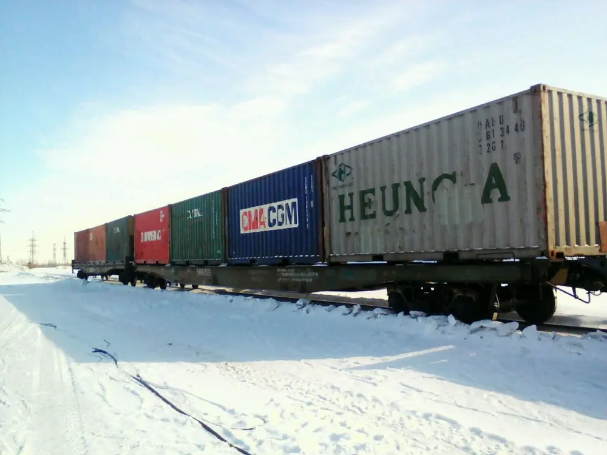

Отправить или получить контейнер
Контейнерная площадка станции Новый Уренгой, в центре города: 20- и 40‑футовые контейнеры (30 и 72 м³), в том числе домашние вещи. Работаем с ПАО «ТрансКонтейнер» и ООО «Главный путь».
23‑07‑27Участок погрузо-разгрузочных работ, ул. Индустриальная